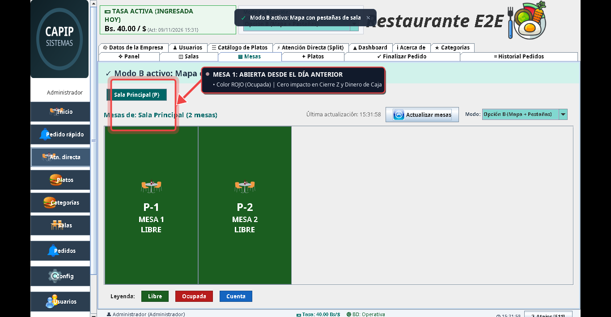
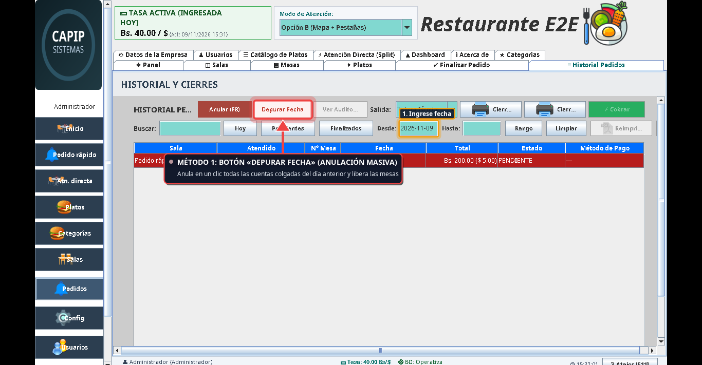
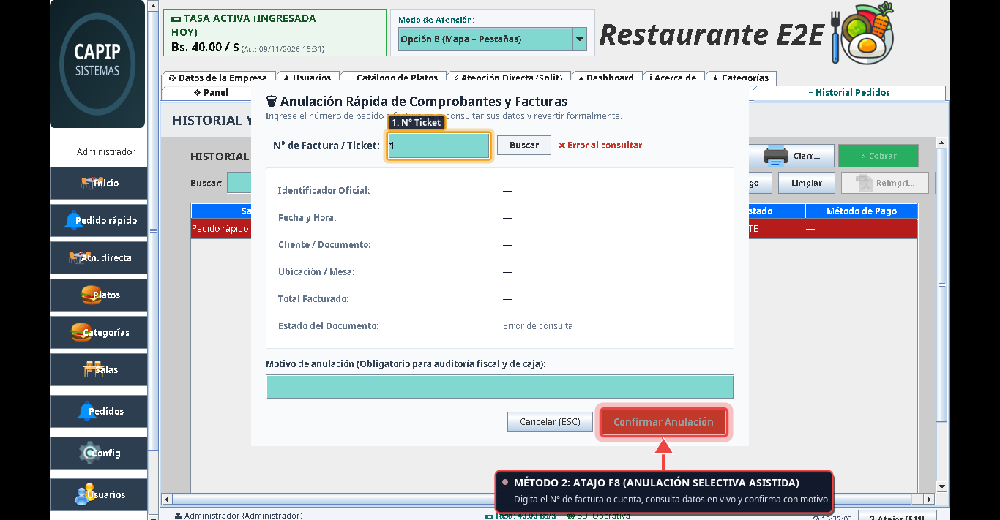
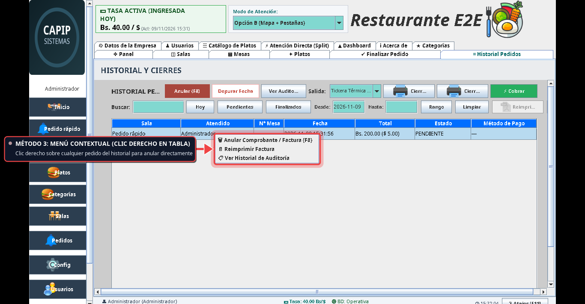
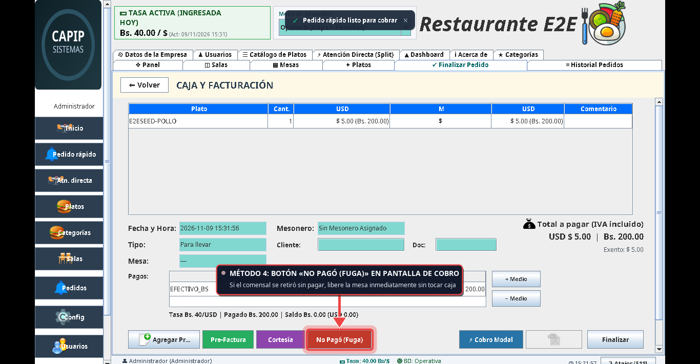

Manual visual de resolución inmediata para el dueño del restaurante: cómo gestionar mesas abiertas en la mañana y cómo operar legalmente ante cortes eléctricos o caída del sistema.
Liberación masiva en 1 clic de mesas colgadas de la noche anterior sin alterar la caja ni perder dinero.
Por fecha masiva, atajo directo F8 por número, menú contextual (clic derecho) o botón de fuga en caja.
Talonario físico obligatorio (SNAT/2011/00071) y posterior transcripción al sistema sin duplicar correlativos.
Lo que el dueño debe saber en 30 segundos: cero pérdida de dinero y cero descuadre fiscal.
Una cuenta de mesa (PENDIENTE) nunca es dinero. Anularla no descuenta de la caja chica ni afecta el Cierre Z.
Comanda: orden a cocina (0 impacto).
Pre-cuenta: total informativo al comensal.
Factura: documento fiscal definitivo con IVA.
Toda anulación queda grabada con fecha, hora, usuario y motivo obligatorio en la auditoría del sistema. Nadie borra a ciegas.
Diagnóstico visual en sala y alternativas de solución para habilitar el servicio del día.

🔍 Clic para ampliarEl turno de la noche cerró apresuradamente, hubo comensales que se fueron sin pagar (fuga) o comandas de prueba sin cobrar.
La mesa aparece ROJA (bloqueada). El mesonero no puede sentar nuevos clientes hasta que se libere.
Limpia todas las mesas colgadas del día anterior de forma simultánea.

🔍 Clic para ampliarPara anular un ticket o cuenta específica conociendo su número.

🔍 Clic para ampliarFlujo natural directo sobre la lista de comandas y pedidos.

🔍 Clic para ampliarPara resolver deserciones o anulaciones de último minuto frente al cajero.

🔍 Clic para ampliarObligación legal de continuidad del servicio mediante factura manual en papel.
Todo negocio debe poseer talonarios preimpresos por imprenta autorizada con Número de Control SENIAT.
Si se corta la luz, se emite factura manual del talonario. El restaurante sigue cobrando sin detener el servicio.
El SENIAT prohíbe expresamente reimprimir una factura digital una vez entregada la física manual.
Conciliación automática entre las facturas físicas de contingencia y el libro digital.
El cajero ingresa las notas del talonario físico manual al sistema.
Se marca la casilla es_contingencia = 1.
Se asocia el N° de factura manual y N° de control físico del talonario.
Aparece en las 18 columnas oficiales sin duplicar correlativos digitales.
Guía de bolsillo: qué método usar según la situación del salón.
| Situación Operativa | Método Óptimo | Acceso Rápido | Efecto en Mesa | Efecto en Caja / Cierre Z |
|---|---|---|---|---|
| Apertura matutina con varias mesas colgadas de ayer | Depurar por Fecha | Botón en Historial | Libera todas las mesas | $0.00 (Sin impacto) |
| Se tiene el ticket en mano o N° de comanda específico | Atajo F8 Asistido | Tecla F8 | Libera la mesa puntual | $0.00 (Sin impacto) |
| Supervisión visual en la tabla de historial | Menú Contextual | Clic derecho en fila | Libera la mesa puntual | $0.00 (Sin impacto) |
| Cliente se fue sin pagar frente a la caja | Botón No Pagó | Pantalla de Cobro | Libera la mesa | $0.00 (Registra Fuga) |
| Corte eléctrico o sistema inoperante | Talonario Físico | Factura manual papel | Servicio manual | Transcripción posterior como contingencia |